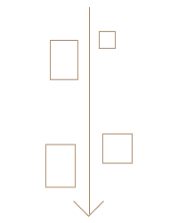
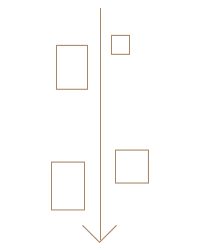

La sala si apriva con un’esposizione di grandi sarcofagi in legno, ritrovati dalla Missione Archeologica Italiana diretta da Ernesto Schiaparelli nella Valle delle Regine nel 1903. Si tratta di sarcofagi antropoidi appartenenti ad alcune famiglie di sacerdoti vissuti a Tebe tra l'XI e il VII secolo a.C. Una vetrina conteneva vari oggetti che accompagnavano la mummia: reticelle magiche fatte di perline, amuleti e coperture di cartonnage (bende e pezzi di papiro gessati) dipinto o persino dorato.
Tra i numerosi papiri funerari esposti, si trovavano vari esempi di Libro dei Morti: raccolte di preghiere e formule da recitare di fronte agli dei dell’Oltretomba per giungere indenni nel regno dell’Aldilà. Quello di Iuefankh, in particolare, è un unico papiro lungo ben 18 metri. Fu il documento che permise allo studioso Lepsius di suddividere in “capitoli” il lungo elenco di invocazioni magiche.
Nel Nuovo Museo Egizio questi papiri verranno esposti nella Papiroteca Funeraria o nelle sezioni cronologiche di appartenenza.
Nel nuovo allestimento, la sala conterrà gli oggetti provenienti dal sito di Deir el-Medina, il villaggio dove vivevano gli operai incaricati della realizzazione delle tombe nella Valle dei Re e nella Valle delle Regine a Tebe. I reperti risalgono principalmente al periodo del Nuovo Regno (circa 1550-1070 a.C.), e nella maggior parte dei casi sono stati ritrovati durante gli scavi della Missione Archeologica Italiana diretta da Ernesto Schiaparelli all’inizio del Novecento.
Le nuove pavimentazioni saranno in grés, un materiale particolarmente resistente al passaggio del pubblico, e avranno colori coordinati al resto del Nuovo Museo Egizio. Nasconderanno gli impianti e le predisposizioni elettriche per le nuove teche in vetro previste per la sala.
In questa sala, eliminando gli strati di tinteggiature aggiunti nel tempo, sono stati recuperati i medaglioni ottocenteschi in corrispondenza delle lunette, che ritraevano effigie di luminari delle scienze e personaggi illustri, in volta è riemersa la stesura originaria a marmorino di tono rosato, nei vani finestra le decorazioni a finto marmo di tonalità rosa-aranciato. Sulle pareti è stata riproposta con velatura a calce la coloritura originale in sottotono.
Trascina il cursore per vedere l’immagine nascosta
 
